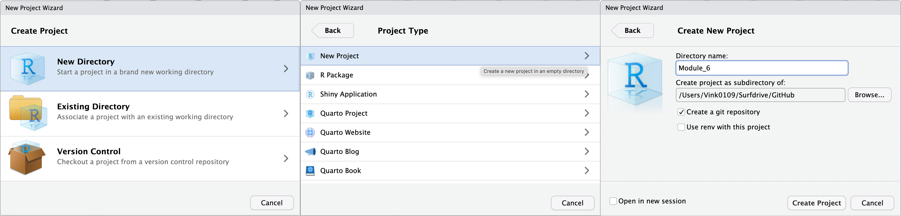
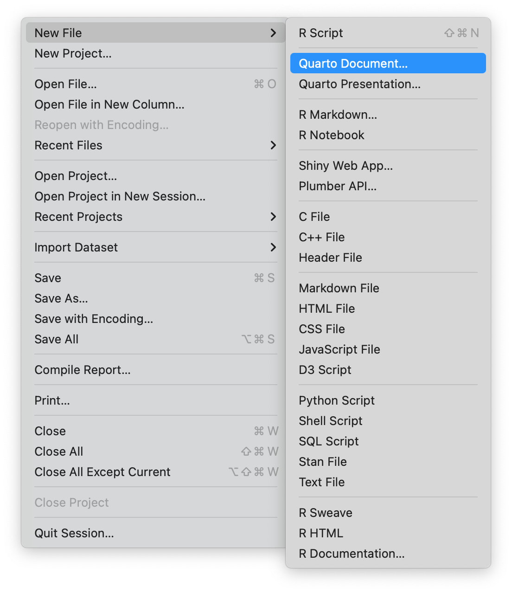
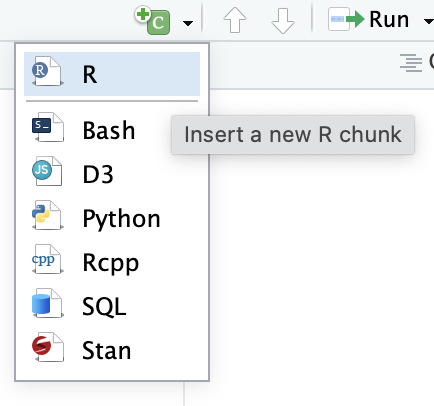
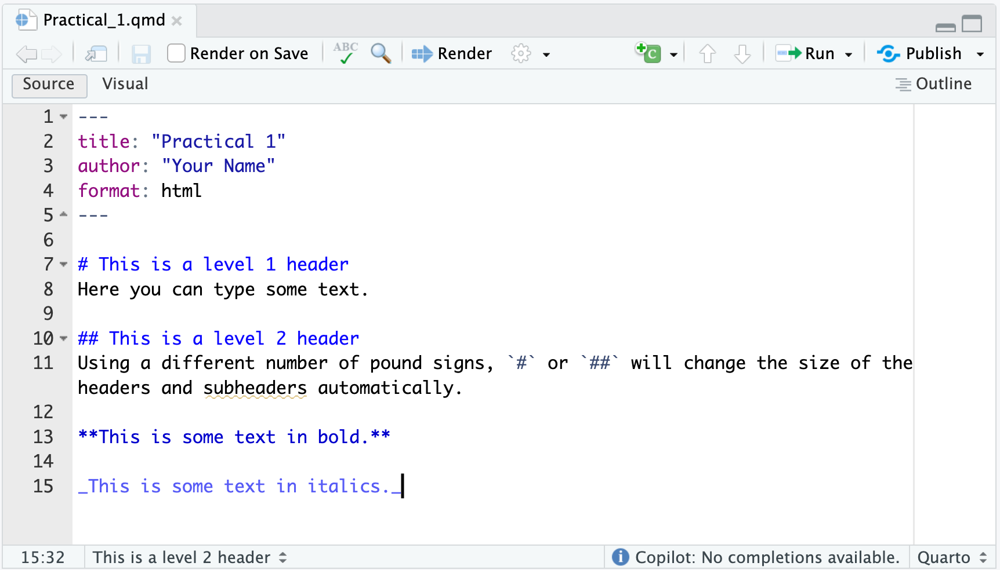
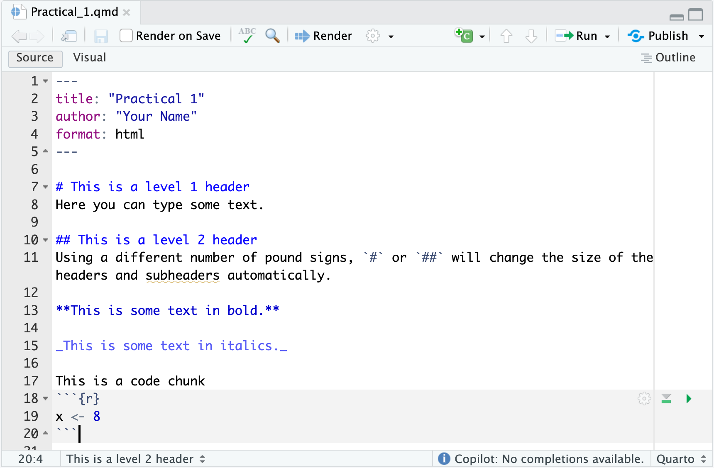
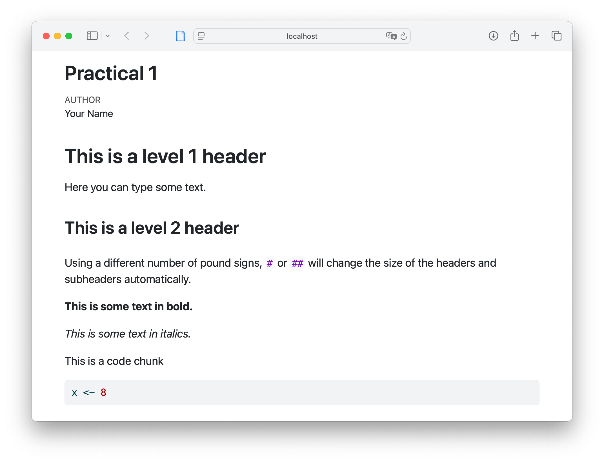
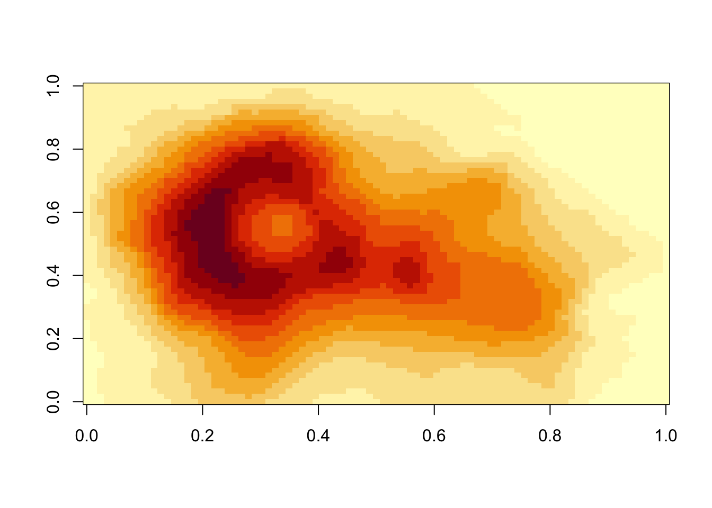

![]()
install.packages("quarto", dependencies = TRUE)Introductie in R & RStudio
Let’s get started with a career in R
Hoorcollege 2 juni 2025
We beginnen vandaag met R en RStudio. We zullen leren om deze software efficient te gebruiken en we gaan werken in projecten. Dit is belangrijk omdat een gestructureerde werkomgeving het mogelijk maakt om met anderen samen te werken aan hetzelfde project. We beginnen vandaag ook meteen met storytelling en zullen daar het publicatieplatform Quarto voor gebruiken. De slides voor het hoorcollege kunt u hier vinden.
Lesstof
Practical 1
In this lab you will learn to work with Quarto files and RStudio Projects.
Exercise 1. Create an R Project to organise your work
In this course you learn to work with RStudio Projects. This way of working ensures that your R code and your analyses will continue to work and are easy to share with collaborators.
- Create a folder on your computer where you will store all the materials of this course. Call it for example “Module_6”. It is better to avoid spaces in the name of your folder; you can use underscore (_) or Capitals to separate words.
- Open RStudio. The RStudio interface will probably look like this:

- Create a new RStudio Project by selecting File -> New Project. A new window pops up, choose the option “New Directory”. Then create a folder “Module_6” in a directory of your choice. Click on “Create project”. See the steps to create an R Project below. When you open a new RStudio Project, a new R session starts up and creates the project structure.

More information about RStudio Projects
On the RStudio Support website you can find a webpage explaining all you need to know about RStudio Projects.
Exercise 2. Working with RStudio and Quarto
Open a new Quarto file
To open a new file, click on the little green plus on the upper left part of the menu bar, and select Quarto, as in the image below. In the window that pops up, leave the settings as they are. You do not have to fill in a title yet.

The structure of a Quarto file
Quarto uses Markdown. Markdown is a simple formatting syntax for authoring HTML, PDF, and MS Word documents. A Markdown file has three components:
- On top of the document, a YAML part, which defines the markup of the document. YAML stands for “Yet Another Markup Language/ Ain’t Markup Language”.
- A text part, where you can create plain text. This part of the document is white.
- The code chunks, where you type R code (but you can also choose another programming language such as Python). Code chunks are grey coloured boxes.
Open the Markdown Quick Reference
To learn more about Quarto and to get help with the options, open the Markdown Quick Reference in RStudio, see menu Help -> Markdown Quick Reference. This will open the reference document in the output pane in the tab “Help”. Use the Quick Reference to do the following exercise.
Exercise 3. Try a few options in Quarto
- When you open a new Quarto file, it contains some example code. Delete all the code from line 5 downwards.
- The first line of the document shows the word “title”. Change the title of the document in the YAML part of the document into:
title: 'Practical 1'. Please note that you have to use quotation marks. - Save the Quarto file using File -> Save. Because you created an R Project in exercise 1, the Quarto file will be saved automatically in the folder of the R Project.
- Fill in your name by adding
author: yournameto the YAML header between thetitleandformat. - Add a Level 1 Header called “This is a level 1 header” to the document. See Markdown Quick Reference, Headers, for how to make headers.
- Add a Level 2 sub-header with name “This is a level 2 header”.
- Add a code chunk by selecting the green button with “c” on the top right, see screenshot below:

- Write some plain text and mark some part of the text bold and some other part of the text italic. In the Markdown Quick Reference, you see that you can make text italic or bold using either
*or_. Do you have an idea why there are two options for making text bold or italic? - Save your Quarto file.
After these steps, your Quarto file should look like this:

Exercise 4: Knitting your Quarto file to HTML
Compile the Quarto file as a HTML file. Click on the Render icon. Verify how the headers look like and whether some part of the text is indeed in italic or bold.
Instead of rendering, it is also possible to get a preview by clicking on “Visual” in the left upper corner of the editor pane. Try both options.
Exercise 5: Entering and running R commands
The code chunks are where you put R code in a Quarto file. So far, your “knitted” file (your output document HTML file) does not show any results from R code, because we did not use any code chunks yet.
- Add a code chunk by selecting the green button with “c” on the top right, see screenshot below:
When you create a new code chunk you should notice that the code area is grey and that it starts and ends with three back ticks `.
One common mistake is to accidentally delete these back ticks. Remember, code chunks are grey and text entry is white - if the colour of certain parts of your Markdown does not look right, check that you have not deleted the back ticks.
- Type the following command to create a new variable called
xwith the value of8, in this way:x <- 8.
The arrow <- is called an assignment operator, and tells R to save an object called x that has the value of 8.
Even if <- is a pain to type, don’t use = instead, it will work, but it will cause confusion later. Use RStudio’s keyboard shortcut: Alt/Option + - (the minus sign). Notice that RStudio automatically surrounds <- with spaces (good code formatting practice).
Your Quarto file should look like this now:
 Running R commands
To actually RUN this command, you have two options:
Click on the green triangle in the code chunk. Note: this will run all the code in the code chunk.
Highlight the code and hit Control-Enter on a PC or Command-Return on a Mac. This option allows you to run specific lines of code in a code chunk.
Think of “running” code in your console as telling R: “do this”.
Run the command using one of these two options. Note that you now have a new object in your workspace (top right pane), called
x.To look at the value of
x(to get the value printed): addxin a new line of the code chunk, see below. Then run the code again. What happens?
x <- 8
x [1] 8- Compile the Quarto file again, using the Knit button and have a look at the result. It should look approximately like this:

- Remove the object
xfrom the workspace by typingrm(x)in the code chunk and run this line.
Exercise 6: Customizing chunk options
You can customize the way your R code is displayed in the knitted html file. To do this for an individual code chunk, you have to add an option to the chunck header.
Some commonly used chunk header options are:
- Show both R code and output. This is the default R code chunk setting.
- Show the results, not the R code. Use
{r echo = FALSE}in the code chunk header. - Do not show the R code, do not show the results. Use
{r include = FALSE}
Question
Add a new code chunk to your Quarto file and type the code below in your code chunk. It creates a contour plot of the Maunga Whau volcano in New Zealand. Try a few options to control the output of your code chunk, such as {r echo = FALSE} or {r include = FALSE} and see what happens when you knit the your Quarto file.
image(volcano)
See the R Markdown Cheat Sheet for a complete list of knitr chunk options.
Closing RStudio Projects
When you want to close your RStudio Project, there are several options:
Quit RStudio using RStudio -> Quit RStudio. This will close the RStudio application but keep the current RStudio Project active. This means that when you open RStudio the next time, it will automatically open with the current RStudio Project.
Close the RStudio Project using File -> Close Project. This will only close the current RStudio Project, but it will not close the RStudio application.
Close the RStudio Project using the option where you close the RStudio Project, but keep the RStudio application open. A window will pop up asking you whether you want to save the workspace (this is the piece of memory where x with value 8 is located). Choose “do not save”.
For more information about RStudio Projects, see the RStudio Support page.
End of Practical 1.
I suggest you continue with Practical 2. If in the end you have time left, play around with R and RStudio or do the advanced exercise.
Advanced exercise: Inline code
- Add a new code chunk to your document and type the following code but with your own information (name, age, country of residence, birthday). You can do this by copy the code below and paste it in the new code chunk. In the R language text values and dates need to be contained in quotation marks but numerical values do not.
name <- "Karin"
age <- 26
country <- "The Netherlands"
today <- Sys.Date()
birthday <- as.Date("2024-10-11")- A Markdown file is convenient for combining code and text in the same document. When reporting the results of statistical analyses, you will need to refer to the statistics from your analyses. This can be done in Quarto using inline code. Let’s use the information from your code chunk to demonstrate how inline code works. Copy and paste this text exactly (do not change anything) to the white space underneath your code chunk (not in the code chunk!):
My name is `r name` and I am `r age` years old. It is `r birthday - today` days until my birthday.- Knit the document using
Renderand look at the result. It should look like this, but then with your own name, country etc.: My name is Karin and I am 26 years old. It is -234 days until my birthday.
Practical 2
Exercise 1-5
- Make two vectors: one named
vec1with values 1 through 6 and one namedvec2with letters A through F.
vec1 <- c(1, 2, 3, 4, 5, 6)
vec2 <- c("A", "B", "C", "D", "E", "F")To create a vector we used c(), which stands for ‘concatenation’. It is just a series of numbers or letters.
- Create two matrices, one from
vec1and one fromvec2. The dimensions for both matrices are 3 rows by 2 columns.
mat1 <- matrix(vec1, nrow = 3, ncol = 2)
mat2 <- matrix(vec2, nrow = 3, ncol = 2)To create a matrix we used matrix(). For a matrix we need to specify the dimensions (in this case 3 rows and 2 columns) and the input (in this case vec1 or vec2) needs to match these dimensions.
- Inspect your vectors and matrices. Are all numerical?
vec1[1] 1 2 3 4 5 6vec2[1] "A" "B" "C" "D" "E" "F"mat1 [,1] [,2]
[1,] 1 4
[2,] 2 5
[3,] 3 6mat2 [,1] [,2]
[1,] "A" "D"
[2,] "B" "E"
[3,] "C" "F" vec1 and mat1 contain numbers and vec2 and mat2 contain characters.
- Make a matrix from both
vec1andvec2with 6 rows and 2 columns. Inspect this matrix.
mat3 <- matrix(c(vec1, vec2), 6, 2)
mat3 [,1] [,2]
[1,] "1" "A"
[2,] "2" "B"
[3,] "3" "C"
[4,] "4" "D"
[5,] "5" "E"
[6,] "6" "F" or
mat3b <- cbind(vec1, vec2)
is.matrix(mat3b)[1] TRUEmat3b vec1 vec2
[1,] "1" "A"
[2,] "2" "B"
[3,] "3" "C"
[4,] "4" "D"
[5,] "5" "E"
[6,] "6" "F" If one or more elements in the matrix represent characters, all other elements are also converted to characters. A matrix is just for either numeric or character elements. Notice that the second approach (the column bind approach from mat3b) returns a matrix where the column names are already set to the name of the bound objects.
To solve the problem of charactered numbers we can create a dataframe. A dataframe is essentially a matrix that allows for character elements. The use of a dataframe is often preferred over the use of a matrix in R, except for purposes where pure numerical calculations are done, such as in matrix algebra. However, most datasets do contain character information and a dataframe would normally be your preferred choice when working with your own collected datasets in R.
- Make a dataframe called
dat3wherevec1andvec2are both columns. Name the columnsV1andV2, respectively. Use functiondata.frame().
dat3 <- data.frame(V1 = vec1, V2 = vec2)
dat3 V1 V2
1 1 A
2 2 B
3 3 C
4 4 D
5 5 E
6 6 FExercise 6-10
- Again, make a dataframe called
dat3bwherevec1andvec2are both columns. Name the columnsV1andV2, respectively. Use functionas.data.frame()on the matrix obtained fromQuestion 4.
This is a tricky situation. At face value, everything may seem to be in order. But, be aware that the code
dat3b <- as.data.frame(mat3, stringsAsFactors = TRUE)
dat3b V1 V2
1 1 A
2 2 B
3 3 C
4 4 D
5 5 E
6 6 Fdoes not work properly (at least not as intended) as the matrix nature of mat3 turned everything into a character value and you have lost the numerical nature of vec1. It may appear to be working, but if we check if column 1 is numerical, it turns out not to be the case.
- Check if the first column in the data frames from Question 4 and Question 5 are indeed numeric. If not, determine what they are.
is.numeric(dat3[, 1])[1] TRUEis.numeric(dat3b[, 1])[1] FALSEThe first column in matrix dat3b obtained from Question 5 is indeed not numeric. As a matter of fact, it is also not a character variable.
is.character(dat3b[, 1])[1] FALSERather tricky; the function as.data.frame() has converted the first variable to a factor.
is.factor(dat3b[, 1])[1] TRUEThis is due to us not specifying the variable correctly in the matrix we used to create the dataframe. Factors are categorical variables that are depicted by numbers. Character vectors are not converted to factors in data frames by default, but the argument stringsAsFactors = TRUE has resulted in this conversion. I forced this to prove a point: You now know that there is a distinction between characters and factors and you know hot to force this conversion to factors in a data frame.
- Select 1) the third row, 2) the second column and 3) the intersection of these two in the dataframe
dat3that you have created in Question 4.
dat3[3, ] #3rd row V1 V2
3 3 Cdat3[, 2] #2nd column[1] "A" "B" "C" "D" "E" "F"dat3$V2 #also 2nd column[1] "A" "B" "C" "D" "E" "F"dat3[3,2] #intersection[1] "C"The [3,2] index is very useful in ‘R’. The first number (before the comma) represents the row and the second number (after the comma) represents the column. For a vector there are no two dimensions and only one dimension can be called. For example, vec1[3] would yield 3. Try it.
Columns can also be called by the $ sign, but only if a name has been assigned. With dataframes assigning names happens automatically.
Note that R automatically reports the values the character column can take. This means that the column is indeed a factor (a categorical variable - as it is supposed to be). A useful function to inspect the structure of a dataframe is str(). Try running it.
str(dat3)'data.frame': 6 obs. of 2 variables:
$ V1: num 1 2 3 4 5 6
$ V2: chr "A" "B" "C" "D" ...Inspecting the structure of your data is vital, as you probably have imported your data from some other source. If we, at a later stage, start analyzing our data without the correct measurement level, we may run into problems. One problem that often occurs is that categorical variables (factors in R) are not coded as such.
- Imagine that the first variable
V1in our dataframedat3is not coded correctly, but actually represents grouping information about cities. Convert the variable to a factor and add the labels Utrecht, New York, London, Singapore, Rome and Cape Town.
dat3$V1 <- factor(dat3$V1, labels = c("Utrecht", "New York", "London", "Singapore", "Rome", "Capetown"))
dat3 V1 V2
1 Utrecht A
2 New York B
3 London C
4 Singapore D
5 Rome E
6 Capetown F- Open the workspace
boys.RData.
We have not yet learned to import data into R. Usually, we would store the data in our project and then import it from that location. For now, we load a dataset in from the internet by running and loading the connection
con <- url("https://www.gerkovink.com/fundamentals/data/boys.RData")
load(con)In the above code we store the connection as a url character string in object con and then load the connection with load(con).
The boys object will be added to your Global Environment. You can now use the boys data by running
boysExercise 11-15
- Most packages have datasets included. Since we have not learned to load packages yet, you are presented with such a data set in a workspace. Open the
boysdataset (it is from packagemice, by the way) by typingboysin the console, and subsequently by using the functionView().
The output is not displayed here as it is simply too large.
Using View() is preferred for inspecting datasets that are large. View() opens the dataset in a spreadsheet-like window (conform MS Excel, or SPSS). If you View() your own datasets, you can not edit the datasets’ contents.
- Find out the dimensions of the
boysdata set and inspect the first and final 6 cases in the data set.
To do it numerically, find out what the dimensions of the boys dataset are.
dim(boys)[1] 748 9There are 748 cases on 9 variables. To select the first and last six cases, use
boys[1:6, ] age hgt wgt bmi hc gen phb tv reg
3 0.035 50.1 3.650 14.54 33.7 <NA> <NA> NA south
4 0.038 53.5 3.370 11.77 35.0 <NA> <NA> NA south
18 0.057 50.0 3.140 12.56 35.2 <NA> <NA> NA south
23 0.060 54.5 4.270 14.37 36.7 <NA> <NA> NA south
28 0.062 57.5 5.030 15.21 37.3 <NA> <NA> NA south
36 0.068 55.5 4.655 15.11 37.0 <NA> <NA> NA southboys[743:748, ] age hgt wgt bmi hc gen phb tv reg
7410 20.372 188.7 59.8 16.79 55.2 <NA> <NA> NA west
7418 20.429 181.1 67.2 20.48 56.6 <NA> <NA> NA north
7444 20.761 189.1 88.0 24.60 NA <NA> <NA> NA west
7447 20.780 193.5 75.4 20.13 NA <NA> <NA> NA west
7451 20.813 189.0 78.0 21.83 59.9 <NA> <NA> NA north
7475 21.177 181.8 76.5 23.14 NA <NA> <NA> NA eastor, more efficiently:
head(boys) age hgt wgt bmi hc gen phb tv reg
3 0.035 50.1 3.650 14.54 33.7 <NA> <NA> NA south
4 0.038 53.5 3.370 11.77 35.0 <NA> <NA> NA south
18 0.057 50.0 3.140 12.56 35.2 <NA> <NA> NA south
23 0.060 54.5 4.270 14.37 36.7 <NA> <NA> NA south
28 0.062 57.5 5.030 15.21 37.3 <NA> <NA> NA south
36 0.068 55.5 4.655 15.11 37.0 <NA> <NA> NA southtail(boys) age hgt wgt bmi hc gen phb tv reg
7410 20.372 188.7 59.8 16.79 55.2 <NA> <NA> NA west
7418 20.429 181.1 67.2 20.48 56.6 <NA> <NA> NA north
7444 20.761 189.1 88.0 24.60 NA <NA> <NA> NA west
7447 20.780 193.5 75.4 20.13 NA <NA> <NA> NA west
7451 20.813 189.0 78.0 21.83 59.9 <NA> <NA> NA north
7475 21.177 181.8 76.5 23.14 NA <NA> <NA> NA eastThe functions head() and tail() are very useful functions. For example, from looking at both functions we can observe that the data are very likely sorted based on age.
- It seems that the
boysdata are sorted based onage. Verify this.
To verify if the data are indeed sorted, we can run the following command to test the complement of that statement. Remember that we can always search the help for functions: e.g. we could have searched here for ?sort and we would quickly have ended up at function is.unsorted() as it tests whether an object is not sorted.
is.unsorted(boys$age)[1] FALSEwhich returns FALSE, indicating that boys’ age is indeed sorted (we asked if it was unsorted!). To directly test if it is sorted, we could have used
!is.unsorted(boys$age)[1] TRUEwhich tests if data data are not unsorted. In other words the values TRUE and FALSE under is.unsorted() turn into FALSE and TRUE under !is.unsorted(), respectively.
- Inspect the
boysdataset withstr(). Use one or more functions to find distributional summary information (at least information about the minimum, the maximum, the mean and the median) for all of the variables. Give the standard deviation forageandbmi. Tip: make use of the help (?) and help search (??) functionality inR.
str(boys)'data.frame': 748 obs. of 9 variables:
$ age: num 0.035 0.038 0.057 0.06 0.062 0.068 0.068 0.071 0.071 0.073 ...
$ hgt: num 50.1 53.5 50 54.5 57.5 55.5 52.5 53 55.1 54.5 ...
$ wgt: num 3.65 3.37 3.14 4.27 5.03 ...
$ bmi: num 14.5 11.8 12.6 14.4 15.2 ...
$ hc : num 33.7 35 35.2 36.7 37.3 37 34.9 35.8 36.8 38 ...
$ gen: Ord.factor w/ 5 levels "G1"<"G2"<"G3"<..: NA NA NA NA NA NA NA NA NA NA ...
$ phb: Ord.factor w/ 6 levels "P1"<"P2"<"P3"<..: NA NA NA NA NA NA NA NA NA NA ...
$ tv : int NA NA NA NA NA NA NA NA NA NA ...
$ reg: Factor w/ 5 levels "north","east",..: 4 4 4 4 4 4 4 3 3 2 ...summary(boys) #summary info age hgt wgt bmi
Min. : 0.035 Min. : 50.00 Min. : 3.14 Min. :11.77
1st Qu.: 1.581 1st Qu.: 84.88 1st Qu.: 11.70 1st Qu.:15.90
Median :10.505 Median :147.30 Median : 34.65 Median :17.45
Mean : 9.159 Mean :132.15 Mean : 37.15 Mean :18.07
3rd Qu.:15.267 3rd Qu.:175.22 3rd Qu.: 59.58 3rd Qu.:19.53
Max. :21.177 Max. :198.00 Max. :117.40 Max. :31.74
NA's :20 NA's :4 NA's :21
hc gen phb tv reg
Min. :33.70 G1 : 56 P1 : 63 Min. : 1.00 north: 81
1st Qu.:48.12 G2 : 50 P2 : 40 1st Qu.: 4.00 east :161
Median :53.00 G3 : 22 P3 : 19 Median :12.00 west :239
Mean :51.51 G4 : 42 P4 : 32 Mean :11.89 south:191
3rd Qu.:56.00 G5 : 75 P5 : 50 3rd Qu.:20.00 city : 73
Max. :65.00 NA's:503 P6 : 41 Max. :25.00 NA's : 3
NA's :46 NA's:503 NA's :522 sd(boys$age) #standard deviation for age[1] 6.894052sd(boys$bmi, na.rm = TRUE) #standard deviation for bmi[1] 3.053421Note that bmi contains 21 missing values, e.g. by looking at the summary information. Therefor we need to use na.rm = TRUE to calculate the standard deviation on the observed cases only.
- Select all boys that are 20 years or older. How many are there?
The logical operators (TRUE vs FALSE) are a very powerful tool in R. For example, we can just select the rows (respondents) in the data that are older than 20 by putting the logical operater within the row index of the dataset:
boys2 <- boys[boys$age >= 20, ]
nrow(boys2)[1] 12or, alternatively,
boys2.1 <- subset(boys, age >= 20)
nrow(boys2.1)[1] 12Exercise 16-17
- Select all boys that are older than 19, but younger than 19.5. How many are there?
boys3 <- boys[boys$age > 19 & boys$age < 19.5, ]
nrow(boys3)[1] 18or, alternatively,
boys3.2 <- subset(boys, age > 19 & age < 19.5)
nrow(boys3.2)[1] 18- What is the mean age of boys younger than 15 years of age that do not live in region
north?
mean(boys$age[boys$age < 15 & boys$reg != "north" ], na.rm = TRUE)[1] 6.044461or, alternatively,
mean(subset(boys, age < 15 & reg != "north")$age, na.rm=TRUE)[1] 6.044461The mean age is 6.0444609 years
Today we have learned to use R at its basics. This offers tremendous flexibility, but may also be inefficient when our aim is some complex analysis, data operation of data manipulation. Doing advanced operations in basic R may require lots and lots of code. Tomorrow we will start using packages that allow us to do complicated operations with just a few lines of code.
As you start using R in your own research, you will find yourself in need of packages that are not part of the default R installation. The beauty of R is that its functionality is community-driven. People can add packages to CRAN that other people can use and improve. Chances are that a function and/or package has been already developed for the analysis or operation you plan to carry out. If not, you are of course welcome to fill the gap by submitting your own package.
End of practical